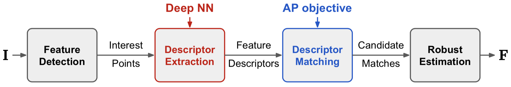
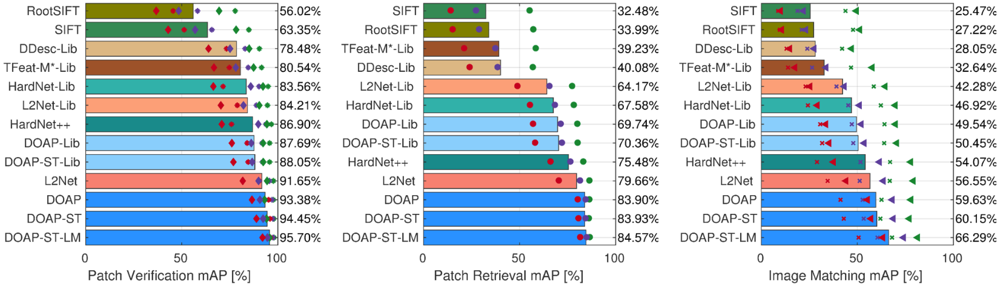

Local Descriptors Optimized for Average Precision |
|
Extraction of local feature descriptors is a vital stage in numerous computer vision pipelines. We improve the learning of local feature descriptors by optimizing the performance of descriptor matching, which is a common stage that follows descriptor extraction in local feature based pipelines, and can be formulated as nearest neighbor retrieval. Specifically, we directly optimize a ranking-based retrieval performance metric, Average Precision, using deep neural networks. This general-purpose solution can also be viewed as a "learning to rank" approach with a listwise loss, which is advantageous compared to recent local ranking approaches. |
Paper
Kun He, Yan Lu, and Stan Sclaroff.
Please cite this paper as: @inproceedings{He_2018_DOAP,title={Local Descriptors Optimized for Average Precision}, author={He, Kun and Lu, Yan and Sclaroff, Stan}, booktitle={IEEE Conference on Computer Vision and Pattern Recognition (CVPR)}, month={June}, year={2018} } DownloadsUpdate Nov. 9, 2018: previously, for the DOAP and DOAP-ST models trained on UBC-Liberty, incorrect links were provided. Please re-download them. We apologize for the oversight.Pretrained modelsWe provide pretrained models on the benchmarks used in the paper. Our implementation is based on MatConvNet, and the models are in DagNN format. We use the L2-Net architecture proposed in [2]. Models with suffix "_ST" are augmented with the Spatial Transformer module [3], and suffix "_LM" means label mining is used during training.
Real-valued (128-d with L2-normalization):
Binary (256-bit): HPatches resultsUpdate Nov. 9, 2018: Following the experimental setup of HardNet [5], we now provide .csv files for results on the "full" split of HPatches, for DOAP and DOAP-ST trained on UBC-Liberty.We provide original .csv files corresponding to the results reported on the
HPatches benchmark [4] in the paper.
Note: all results are obtained on the test set of the "a" split. Code
Supporting layer definitions:
Testing code: Code for CVPR'18 "Tie-Aware Hashing" paperOur AP optimization builds on the techniques developed in [1], which solves the "supervised hashing" problem for image retrieval. Code for that paper is here: https://github.com/kunhe/TALR References[1] Kun He, Fatih Cakir, Sarah Adel Bargal, and Stan Sclaroff. "Hashing as Tie-Aware Learning to Rank," IEEE CVPR 2018 [2] Yurun Tian, Bin Fan, and Fuchao Wu. "L2-Net: Deep Learning of Discriminative Patch Descriptor in Euclidean Space," IEEE CVPR 2017 [3] Max Jaderberg, Karen Simonyan, Andrew Zisserman, and Koray Kavukcuoglu. "Spatial Transformer Networks," NIPS 2015 [4] Vassileios Balntas*, Karel Lenc*, Andrea Vedaldi, and Krystian Mikolajczyk. "HPatches: A benchmark and evaluation of handcrafted and learned local descriptors," IEEE CVPR 2017 [5] Anastasiya Mishchuk, Dmytro Mishkin, Filip Radenovic, and Jiri Matas. "Working hard to know your neighbor's margins: Local descriptor learning loss," NIPS 2017 Contact
For questions/comments, please contact: |